NQ 一分 K 急跌 + 均線排列 · 31 天
NQ=F · 2026-07-27 ~ 2026-08-26 · 29967 根 1m
（2026-07-27 11:53 ~ 2026-08-26 11:42 ET）。
只畫急跌後 90 分鐘內不破低、再走出 MA5>10>20 的命中。綠圈進場、另一圈出場（停損急跌低、收盤跌破 MA20、或持滿 90 分）。
急跌 × 均線梯子
| 條件 | 急跌 | 未破低 | 短均 5>10>20 | 接到 MA60 | 完整八條 |
|---|---|---|---|---|---|
| 嚴格（5×ATR 或 50 點、5×量、跌破全部均線） | 19 | 2 | 2 | 2 | 0 |
| 中等 | 62 | 9 | 8 | 7 | 3 |
| 寬鬆 | 101 | 13 | 11 | 11 | 6 |
圖只列急跌+排列命中，去重後標最嚴那一檔。
進出場
| 檔 | 急跌 | 進場 | 進場價 | 出場 | 出場價 | 原因 | 點數 |
|---|---|---|---|---|---|---|---|
| 寬鬆 | 07-30 06:00 | 07-30 06:15 | 27555.50 | 07-30 06:42 | 27617.25 | 跌破 MA20 | +61.8pt |
| 中等 | 07-31 03:00 | 07-31 03:27 | 28567.50 | 07-31 03:49 | 28554.50 | 跌破 MA20 | -13.0pt |
| 寬鬆 | 08-03 19:38 | 08-03 19:50 | 28958.25 | 08-03 20:00 | 28951.50 | 跌破 MA20 | -6.8pt |
| 中等 | 08-06 15:59 | 08-06 16:00 | 29535.00 | 08-06 16:17 | 29528.50 | 跌破 MA20 | -6.5pt |
| 中等 | 08-10 00:40 | 08-10 00:50 | 29895.00 | 08-10 00:53 | 29887.00 | 跌破 MA20 | -8.0pt |
| 寬鬆 | 08-12 08:30 | 08-12 08:31 | 29868.25 | 08-12 08:56 | 29912.25 | 跌破 MA20 | +44.0pt |
| 寬鬆 | 08-12 10:31 | 08-12 10:44 | 29924.50 | 08-12 10:47 | 29897.75 | 跌破 MA20 | -26.8pt |
| 中等 | 08-13 08:31 | 08-13 08:51 | 29870.25 | 08-13 09:17 | 29902.75 | 跌破 MA20 | +32.5pt |
| 中等 | 08-14 08:13 | 08-14 08:30 | 30263.25 | 08-14 08:46 | 30264.50 | 跌破 MA20 | +1.2pt |
| 寬鬆 | 08-17 04:00 | 08-17 04:10 | 30321.75 | 08-17 04:11 | 30306.25 | 跌破 MA20 | -15.5pt |
| 寬鬆 | 08-17 07:00 | 08-17 07:02 | 30311.75 | 08-17 07:10 | 30312.25 | 跌破 MA20 | +0.5pt |
| 嚴格 | 08-18 20:01 | 08-18 20:30 | 29549.50 | 08-18 20:50 | 29560.25 | 跌破 MA20 | +10.8pt |
| 中等 | 08-19 15:50 | 08-19 16:47 | 29537.50 | 08-19 18:28 | 29617.00 | 跌破 MA20 | +79.5pt |
| 嚴格 | 08-24 08:32 | 08-24 08:49 | 29224.25 | 08-24 08:58 | 29210.25 | 跌破 MA20 | -14.0pt |
急跌 + 排列
寬鬆 進場 07-30 06:15 → 出場 07-30 06:42
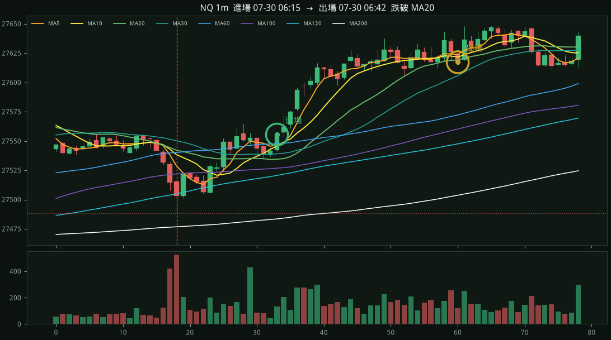
急跌 07-30 06:00 27.5 點 · 停損 27488.25
進場綠圈 27555.50 · 出場圈 27617.25 · 跌破 MA20 · +61.8pt
中等 進場 07-31 03:27 → 出場 07-31 03:49
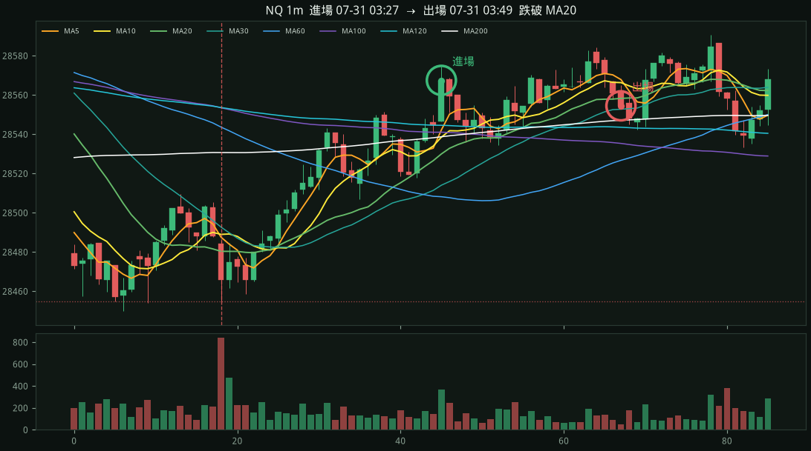
急跌 07-31 03:00 30.8 點 · 停損 28455.00
進場綠圈 28567.50 · 出場圈 28554.50 · 跌破 MA20 · -13.0pt
寬鬆 進場 08-03 19:50 → 出場 08-03 20:00
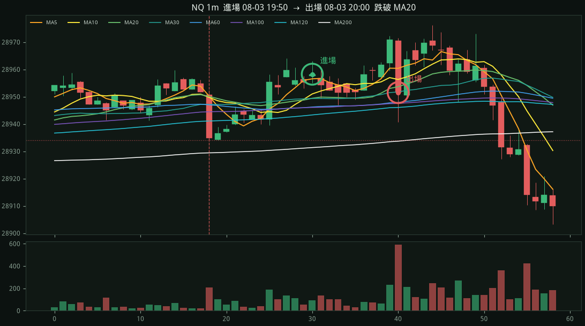
急跌 08-03 19:38 17.5 點 · 停損 28934.00
進場綠圈 28958.25 · 出場圈 28951.50 · 跌破 MA20 · -6.8pt
中等 進場 08-06 16:00 → 出場 08-06 16:17
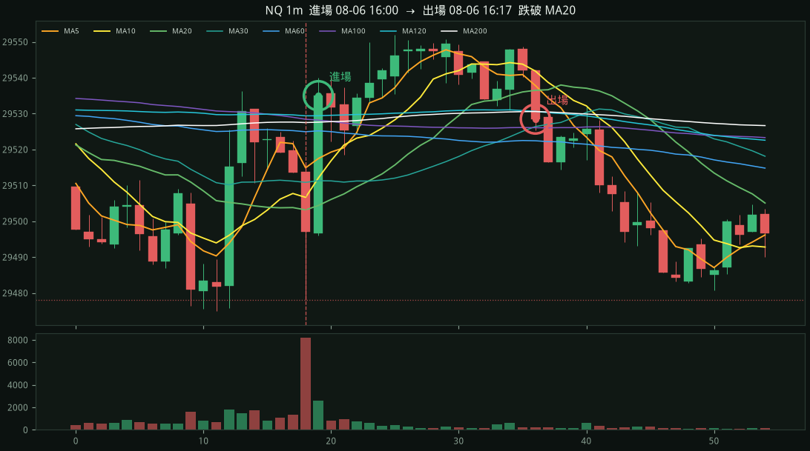
急跌 08-06 15:59 38.0 點 · 停損 29478.00
進場綠圈 29535.00 · 出場圈 29528.50 · 跌破 MA20 · -6.5pt
中等 進場 08-10 00:50 → 出場 08-10 00:53
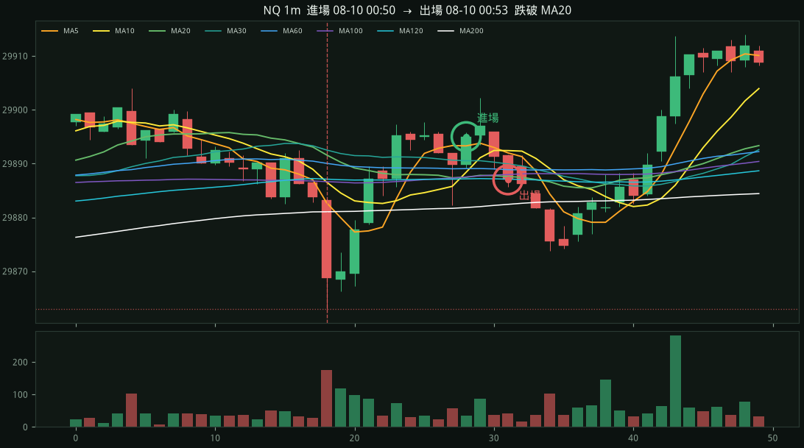
急跌 08-10 00:40 20.5 點 · 停損 29863.00
進場綠圈 29895.00 · 出場圈 29887.00 · 跌破 MA20 · -8.0pt
寬鬆 進場 08-12 08:31 → 出場 08-12 08:56
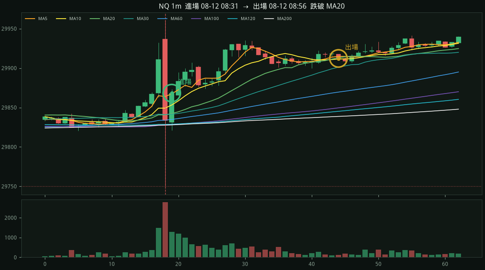
急跌 08-12 08:30 209.8 點 · 停損 29750.25
進場綠圈 29868.25 · 出場圈 29912.25 · 跌破 MA20 · +44.0pt
寬鬆 進場 08-12 10:44 → 出場 08-12 10:47
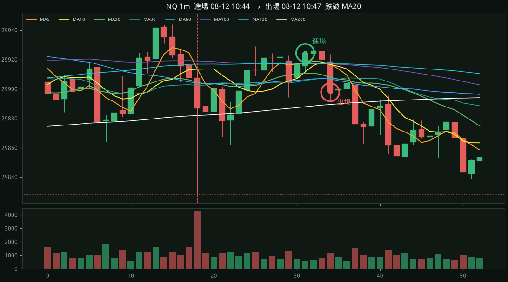
急跌 08-12 10:31 83.8 點 · 停損 29828.25
進場綠圈 29924.50 · 出場圈 29897.75 · 跌破 MA20 · -26.8pt
中等 進場 08-13 08:51 → 出場 08-13 09:17
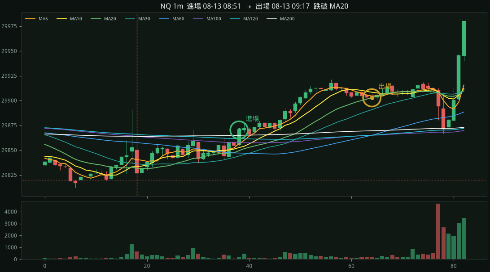
急跌 08-13 08:31 31.8 點 · 停損 29820.00
進場綠圈 29870.25 · 出場圈 29902.75 · 跌破 MA20 · +32.5pt
中等 進場 08-14 08:30 → 出場 08-14 08:46
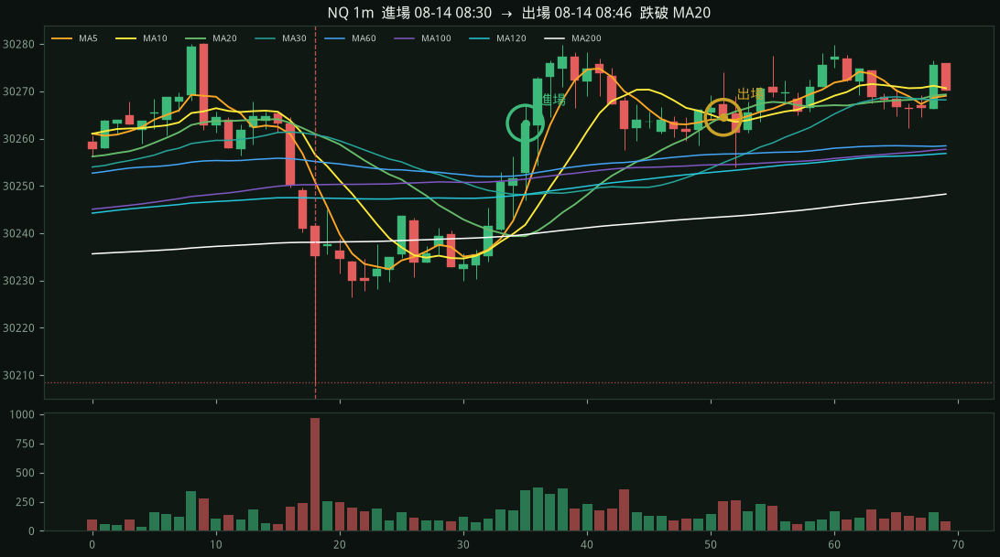
急跌 08-14 08:13 33.0 點 · 停損 30208.50
進場綠圈 30263.25 · 出場圈 30264.50 · 跌破 MA20 · +1.2pt
寬鬆 進場 08-17 04:10 → 出場 08-17 04:11
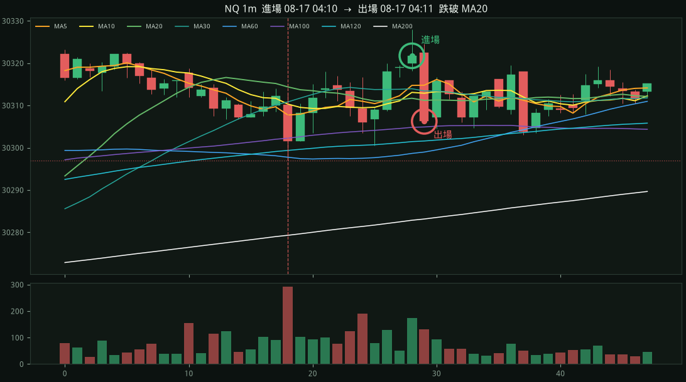
急跌 08-17 04:00 16.0 點 · 停損 30297.00
進場綠圈 30321.75 · 出場圈 30306.25 · 跌破 MA20 · -15.5pt
寬鬆 進場 08-17 07:02 → 出場 08-17 07:10
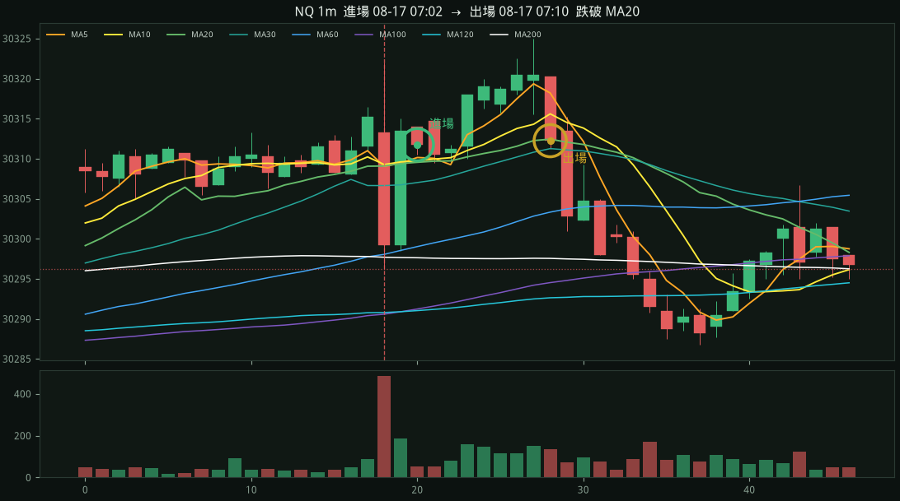
急跌 08-17 07:00 25.8 點 · 停損 30296.25
進場綠圈 30311.75 · 出場圈 30312.25 · 跌破 MA20 · +0.5pt
嚴格 進場 08-18 20:30 → 出場 08-18 20:50

急跌 08-18 20:01 81.0 點 · 停損 29442.00
進場綠圈 29549.50 · 出場圈 29560.25 · 跌破 MA20 · +10.8pt
中等 進場 08-19 16:47 → 出場 08-19 18:28
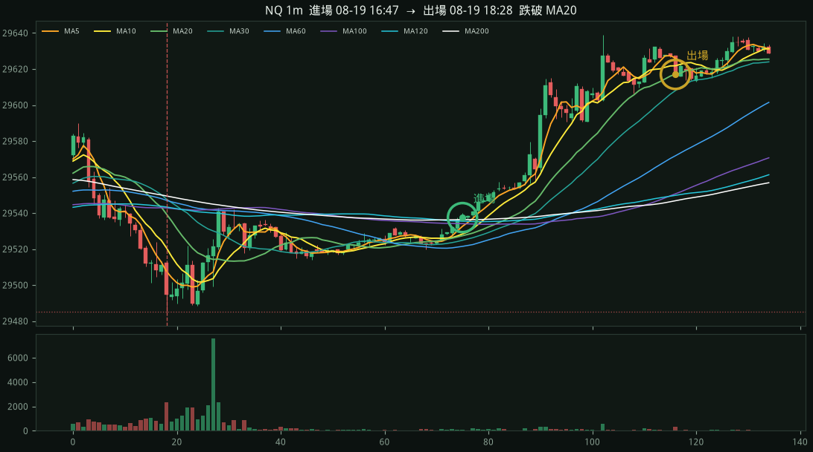
急跌 08-19 15:50 27.2 點 · 停損 29485.25
進場綠圈 29537.50 · 出場圈 29617.00 · 跌破 MA20 · +79.5pt
嚴格 進場 08-24 08:49 → 出場 08-24 08:58
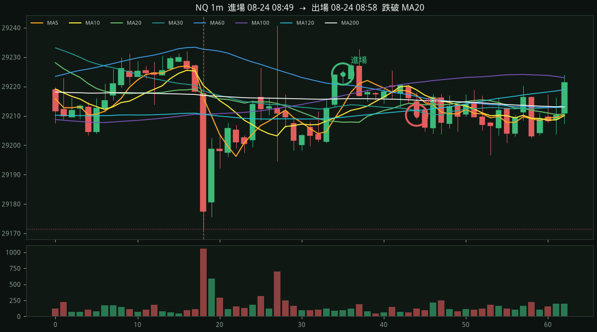
急跌 08-24 08:32 50.0 點 · 停損 29171.50
進場綠圈 29224.25 · 出場圈 29210.25 · 跌破 MA20 · -14.0pt